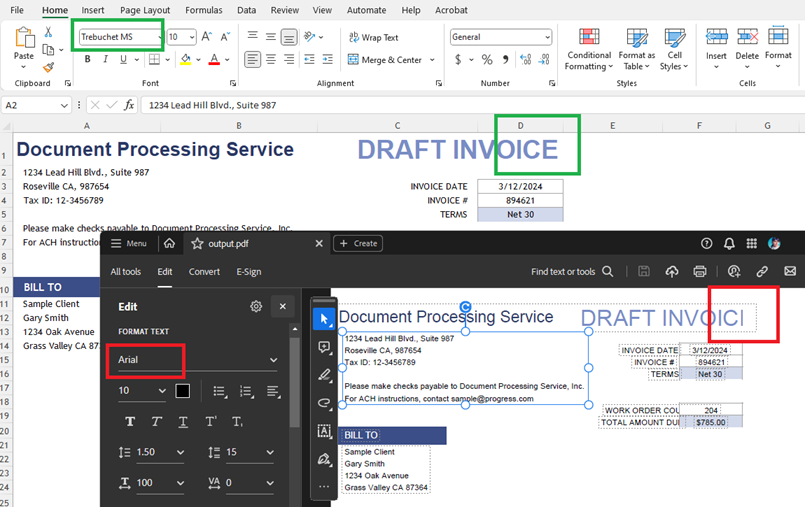
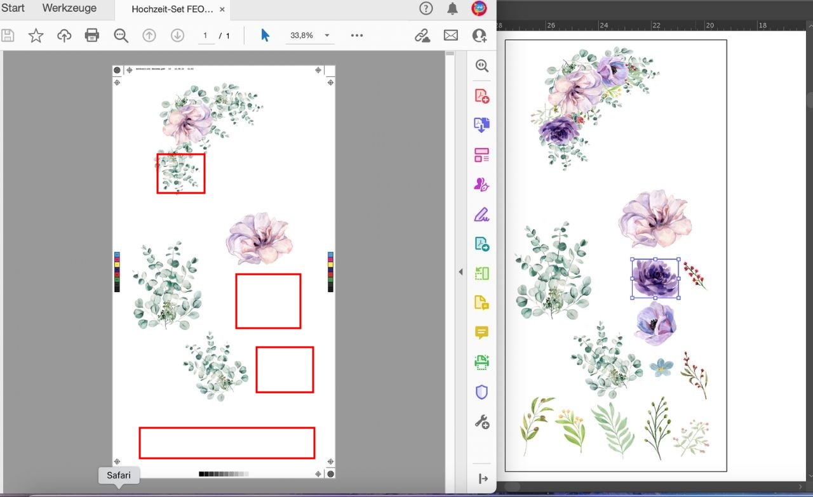
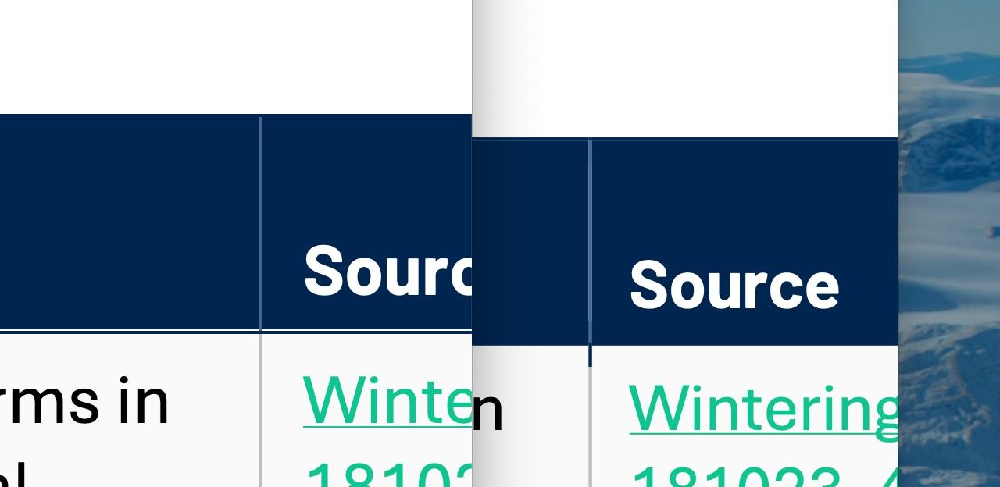

Сохранение оформления
Заголовки, шрифты, таблицы, изображения и расположение элементов сохраняются в готовом файле.
Учебный материал
Как сохранить документ из LibreOffice Writer, чтобы оформление оставалось аккуратным при просмотре, отправке и печати.
Посмотреть инструкцию →01 / Определение
Экспорт — это сохранение документа в другом формате с сохранением его внешнего вида.
Заголовки, шрифты, таблицы, изображения и расположение элементов сохраняются в готовом файле.
PDF можно открывать на разных устройствах, даже если на них не установлен Writer.
Формат подходит для рефератов, докладов, инструкций и других учебных документов.
02 / Инструкция
Выполните эти действия в LibreOffice Writer.
Проверьте заголовки, размер шрифта, интервалы, поля страницы, таблицы и изображения.
Выберите Файл → Экспортировать как → Экспортировать в PDF.
При необходимости задайте диапазон страниц, качество изображений и другие параметры экспорта.
Нажмите «Экспорт», укажите имя файла и папку, затем подтвердите сохранение.
03 / Контроль качества
Откройте PDF после экспорта и убедитесь, что документ выглядит правильно.
Сохраняйте исходный файл в формате ODT, если документ может понадобиться для дальнейшего редактирования.



Итог
Подготовьте текст, экспортируйте его в PDF и обязательно проверьте результат.
Вернуться наверх ↑